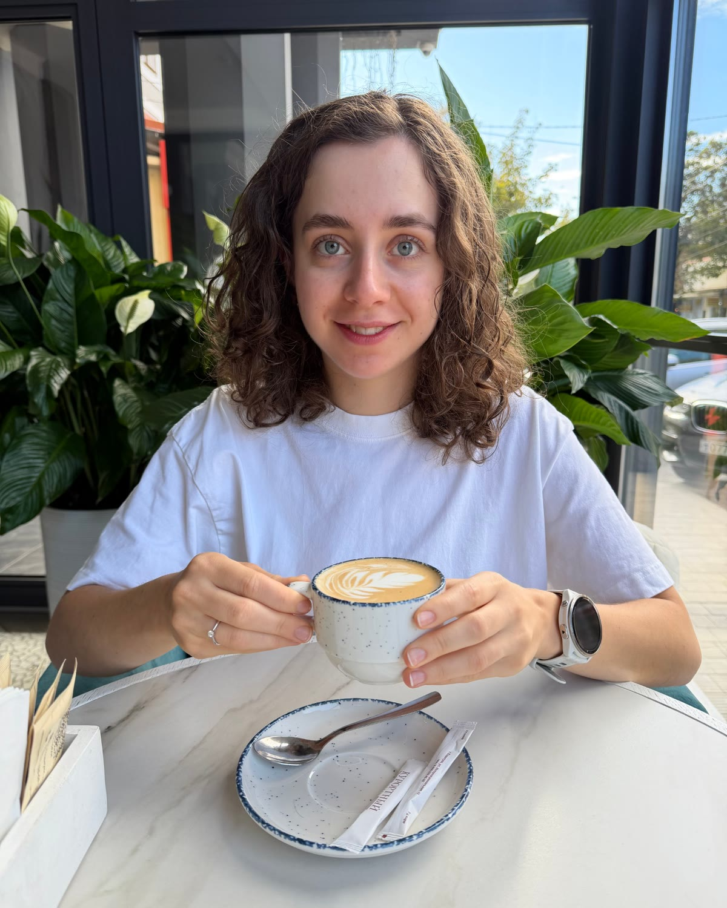

Создам дизайн
для вашего проекта
Разработаю логотип, фирменный стиль, презентации и сайт на Тильде (Таплинк) для вашего бизнеса / продукта / онлайн‑курса и мероприятия
Проекты
С кем работала

Разработаю логотип, фирменный стиль, презентации и сайт на Тильде (Таплинк) для вашего бизнеса / продукта / онлайн‑курса и мероприятия
